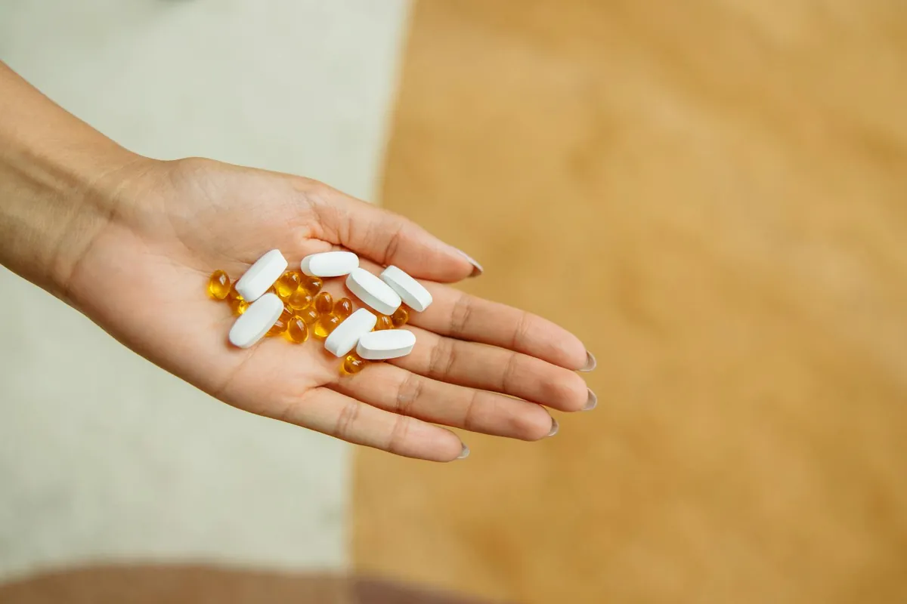

Calcium & Vitamin D for Bones: What the Latest Science Says for Americans
Key takeaways
- I remember standing in the pharmacy aisle, staring at a wall of supplements.
- Calcium.
- Track what feels sustainable and adjust gradually.
I remember standing in the pharmacy aisle, staring at a wall of supplements. Calcium. Vitamin D. For my bones, right? It felt like a no-brainer, a daily ritual I'd do forever. But lately, I've been seeing headlines, hearing whispers about new studies that make me pause. It turns out, the story of Calcium & Vitamin D for Bones: What the Latest Science Says might be way more complicated than we thought. And honestly, it's kind of a relief to know I'm not alone in questioning the status quo.
For years, the message from health authorities and even my own doctor was clear: get enough calcium and vitamin D, and your bones will thank you. It's the foundation of bone health advice in the US. We're talking dairy, fortified foods, and those chalky supplements. But a massive review of existing research is shaking things up, suggesting that for many of us, the benefits of popping extra calcium and vitamin D pills might not be as dramatic as we've been led to believe. This doesn't mean these nutrients aren't important – they absolutely are. It’s more about *how* we get them and *who* truly needs the extra boost.
So, what's the deal? This new wave of analysis is looking at the totality of evidence and finding that while severe deficiencies of calcium or vitamin D can indeed harm bones, the average American adult, who likely consumes some calcium through dairy, fortified cereals, or leafy greens, might not see significant bone protection from popping extra pills. My own journey has involved trying to get more calcium from food first, and it's been a game-changer for my overall well-being. It's a related healthy tip I'd recommend exploring.
The focus is shifting towards a more nuanced approach. It’s not just about the quantity, but the quality of what you eat and your body's ability to use it. Think about it: if your gut isn't absorbing nutrients well, even the best supplements might go to waste. This is why focusing on gut health is so crucial. I've found that paying attention to my digestion has indirectly helped my bone health. It’s another practical guide I’m happy to share.
And let's not forget about vitamin D. While it's often paired with calcium, its role is broader, influencing everything from mood to immune function. But again, the evidence for high-dose supplementation preventing fractures in the general population isn't as strong as we once thought. Getting sensible sun exposure (safely, of course!) and eating vitamin D-rich foods like fatty fish are often enough. This ties into similar wellness insights about embracing natural sources for our nutrients.
The 2-Minute Win
Take a quick inventory of your current diet. Are you getting calcium from foods like yogurt, cheese, leafy greens, or fortified plant milks? Do you eat fatty fish like salmon or get some safe sun exposure? If so, you might already be meeting your needs without needing extra pills. This simple check-in can be the first step towards a more personalized approach to your bone health.
This doesn't mean you should ditch your supplements if your doctor specifically recommended them. If you have osteoporosis, are at high risk, or have a diagnosed deficiency, supplements might still be vital. But for the rest of us, it’s worth a conversation with your healthcare provider. Ask them to review your *actual* dietary intake and consider a blood test for vitamin D levels if you’re concerned. It’s about being informed and taking control. Staying consistent with this informed approach is key.
For years, I just blindly took supplements. But learning that my body might not even be absorbing them efficiently, or that they might not be necessary if my diet is already on point, made me rethink everything. It’s not about perfection, but about smart, personalized choices.
The latest science is nudging us towards a more holistic view of bone health. It's not just about one or two nutrients in a pill. It's about a balanced diet rich in various minerals, regular weight-bearing exercise, and overall healthy lifestyle choices. Building strong bones is a marathon, not a sprint, and it requires a comprehensive strategy. You can explore more health guides on this topic.
So, before you automatically reach for that calcium and vitamin D bottle, consider this: are you getting enough from your food? Are you active? Are you getting enough sunlight? These questions might lead you to a more effective and less pill-dependent path to strong bones. Educational only — not medical advice.
Disclosure: This page may contain affiliate links.
Recommended Reading
- The Ultimate Guide to Daily Hydration: Boost Energy & Wellness
- Older Adults: Essential Supplements vs. What to Skip
- Mindful Eating: Boost Gut Health & Digestion Naturally
More in health

healthOlder Adults: Essential Supplements vs. What to Skip
Navigating supplements for older adults can be overwhelming. Discover which vitamins and minerals are truly essential fo
Read article → health
healthUnlock Your Best Health: The Surprising Benefits of Daily Hydration
Discover how daily hydration can unlock your best health. Learn surprising benefits for energy, skin, digestion, and foc
Read article →Related posts
Older Adults: Essential Supplements vs. What to Skip
Navigating supplements for older adults can be overwhelming. Discover which vitamins and minerals are truly essential fo
Read article →healthUnlock Your Best Health: The Surprising Benefits of Daily Hydration
Discover how daily hydration can unlock your best health. Learn surprising benefits for energy, skin, digestion, and foc
Read article → health
healthGLP-1 Drugs: A Surprising Perk for Addiction and Overdose Prevention?
Discover the surprising link between GLP-1 drugs and addiction/overdose prevention. Learn how these popular medications
Read article →